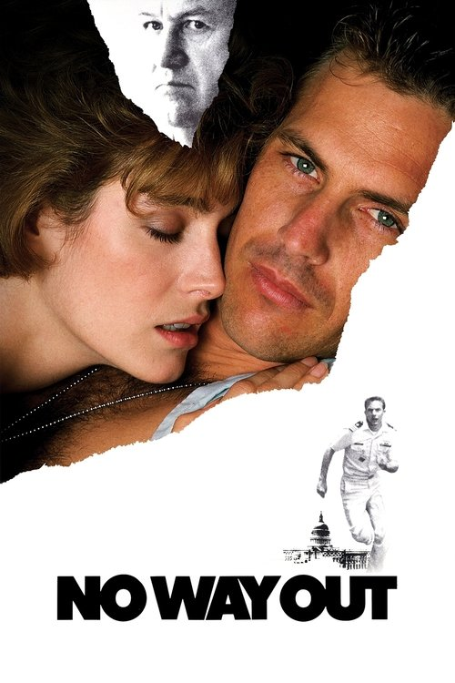

No Way Out (1987)
الوصف: Navy Lt. Tom Farrell meets a young woman, Susan Atwell , and they share a passionate fling. Farrell then finds out that his superior, Defense Secretary David Brice, is also romantically involved with Atwell. When the young woman turns up dead, Farrell is put in charge of the murder investigation. He begins to uncover shocking clues about the case, but when details of his encounter with Susan surface, he becomes a suspect as well.
الممثلون
- Kevin Costner (Lt. Cmdr. Tom Farrell)
- Gene Hackman (Defense Secretary David Brice)
- Sean Young (Susan Atwell)
- Will Patton (Scott Pritchard)
- Howard Duff (Senator William 'Billy' Duvall)
- George Dzundza (Sam Hesselman)
- Jason Bernard (Major Donovan)
- Iman (Nina Beka)
- Fred Thompson (CIA Director Marshall)
- Leon Russom (Kevin O'Brien)
المخرج: Roger Donaldson
المنتج: Robert Garland